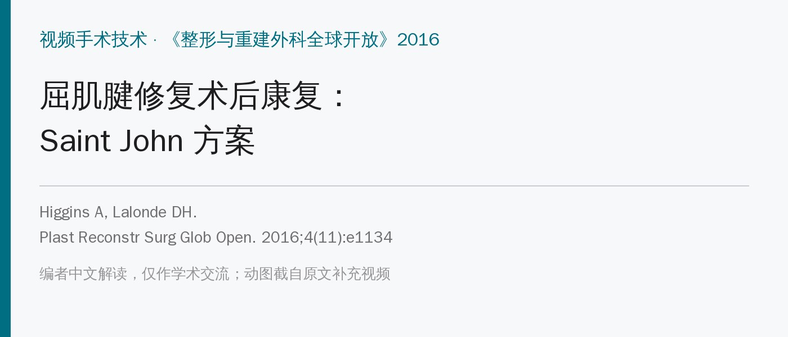
🔖原文信息（编者中文重排）
📚 文献信息
▪ Higgins A, Lalonde DH. Flexor Tendon Repair Postoperative Rehabilitation: The Saint John Protocol. Plast Reconstr Surg Glob Open. 2016;4(11):e1134. doi:10.1097/GOX.0000000000001134
▪ 作者：Amanda Higgins（加拿大圣约翰地区医院作业治疗师）、Donald Lalonde（手外科医生，清醒局麻无止血带手术 WALANT 的主要倡导者）
▪ 文章类型：视频手术技术，正文只有两页，核心内容在 4 段补充视频里；本文的动图都截自这 4 段原文视频
屈肌腱 2 区修复后，传统做法是让患者被动把手指放到全拳位置再主动保持（place and hold）。作者团队做的是清醒局麻无止血带（WALANT）屈肌腱修复：患者术中是清醒的，可以当场主动屈伸手指，医生能直接看到修复口有没有缝隙、及时补缝，作者称这让他们的断裂率下降了 7%。
术中反复观察后，他们有信心放弃全拳放置—保持，改为最多半拳的“真正主动屈曲”（Tang 的主张）。前提是：4～6 股缝合、术中测试没有缝隙。作者认为即使患者是全麻或镇静下手术、享受不到术中测试，也应如此。
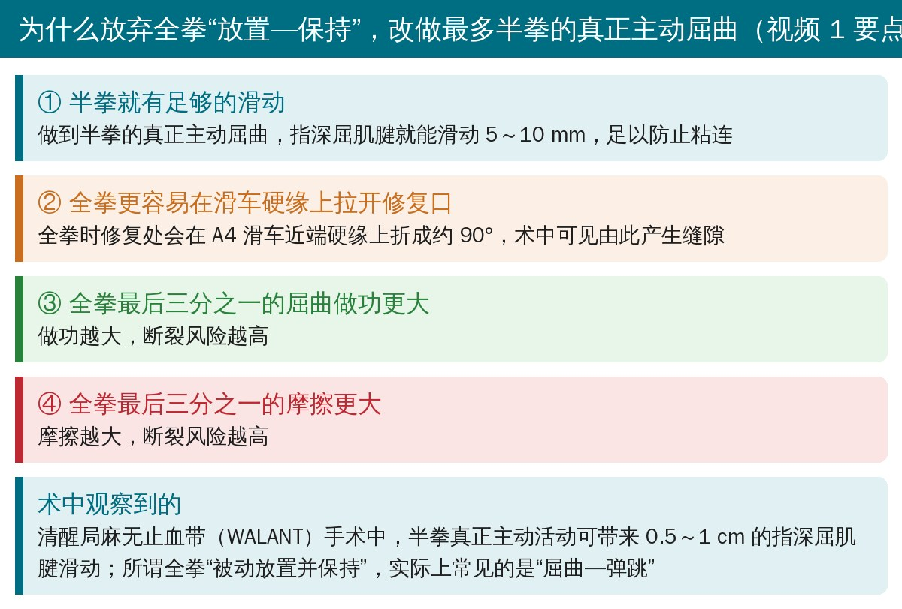
🔖视频 1 要点：为什么只做到半拳（编者根据视频幻灯片翻译整理）
视频 1 是英文幻灯片讲座，包含大量术中照片，没有做成动图，要点已译成上面的卡片。
这不是对照研究，而是作者医院的一套术后康复流程，分 4 个阶段，用视频演示。下面这张卡片是全流程，后面按阶段配上视频动图。
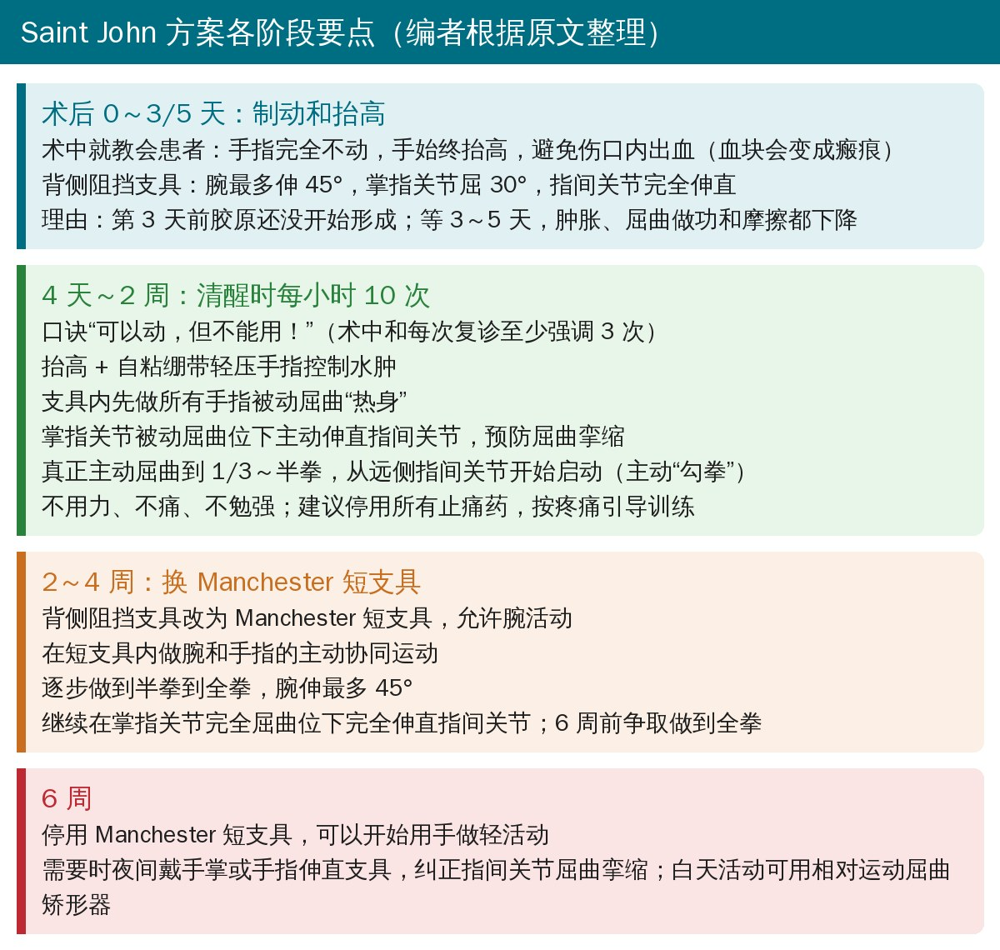
🔖Saint John 方案各阶段要点（编者根据原文整理）
• 术中就教会患者：手指一点都不要动，手始终抬高，避免伤口内出血——出血会形成血块，血块会变成瘢痕
• 为什么等 3～5 天：肿胀、屈曲做功和摩擦都会下降，断裂风险更低；而且胶原第 3 天才开始形成，术后立刻活动没有必要，反而有害
• 术后立即戴背侧阻挡支具：腕最多背伸 45°，手放在舒适位，掌指关节屈 30°，指间关节完全伸直
核心口诀：“可以动，但不能用！”——术中和每次复诊至少向患者强调 3 次。
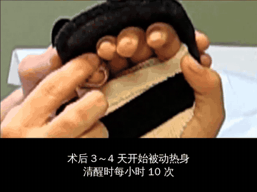
🔖动图 1：在支具内被动屈曲所有手指，作为主动活动前的“热身”（截自原文视频 2）
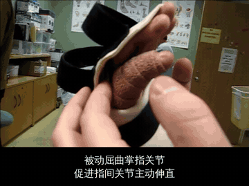
🔖动图 2：被动屈曲掌指关节，在此位置下主动伸直指间关节，预防指间关节屈曲挛缩（截自原文视频 2）
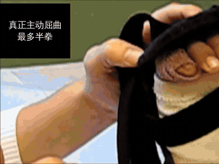
🔖动图 3：真正主动屈曲，最多到半拳（截自原文视频 2）
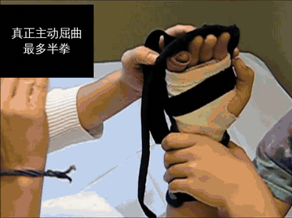
🔖动图 4：同一动作的侧面观，可以看到支具内的屈曲幅度（截自原文视频 2）
• 水肿控制：抬高 + 用自粘绷带（Coban 或 Co-Flex）轻轻包裹手指加压
• 被动热身：在包含腕关节的背侧阻挡支具内，先被动屈曲所有手指
• 防挛缩：掌指关节屈曲位下主动伸直指间关节
• 真正主动屈曲：到三分之一至半拳，从远侧指间关节开始启动（主动“勾拳”）
• 不用力、不痛、不勉强；作者鼓励患者先停用所有止痛药，按疼痛引导训练，再开始真正主动活动
• 视频结尾：前 2 周的目标就是半拳
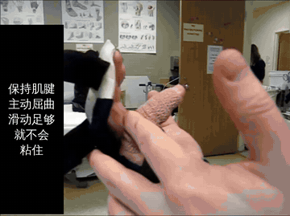
🔖动图 5：换成 Manchester 短支具，手腕可以活动；关键是保持肌腱主动屈曲、滑动足够，就不会粘住（截自原文视频 3）
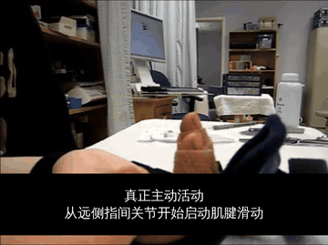
🔖动图 6：真正主动活动从远侧指间关节开始启动肌腱滑动（截自原文视频 3）
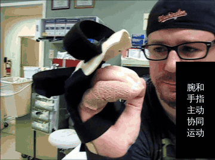
🔖动图 7：腕和手指的主动协同运动——伸腕时屈指、屈腕时伸指（截自原文视频 3）
• 大约术后 2 周，背侧阻挡支具改为 Manchester 短支具，允许腕关节活动
• 在短支具内做腕和手指的主动协同运动
• 逐步从半拳做到全拳，腕背伸最多 45°
• 继续在掌指关节完全屈曲位下完全伸直指间关节
• 目标：6 周前做到全拳
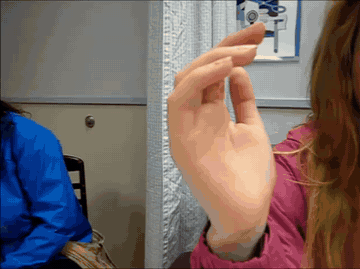
🔖动图 8：逐步握到完整的拳（截自原文视频 4，视频中此阶段提示先争取 3/4 拳）
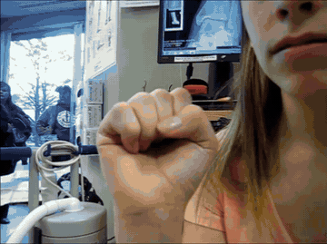
🔖动图 9：去掉支具后反复握拳、张开（截自原文视频 4）
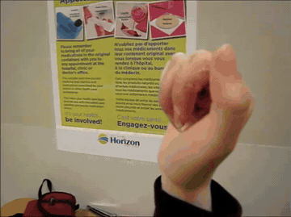
🔖动图 10：6 周后可以开始被动伸直手指，必要时夜间戴伸直支具纠正屈曲畸形（截自原文视频 4）
• 停用 Manchester 短支具，可以开始用手做轻活动
• 如有指间关节屈曲挛缩：夜间戴手掌或手指伸直支具；白天活动时用相对运动屈曲矫形器也有帮助
• 视频 4 还演示了 6 周时开始被动伸直手指
• 这是技术介绍，没有疗效数据：没有报告病例数、断裂率、活动度或功能结局，属于经验分享
• 有前提条件：作者明确说要 4～6 股缝合、术中测试无缝隙；缝合强度不够或没做术中测试时，能否照搬要谨慎
• 理念有依据：半拳真正主动活动来自 Tang 等的研究，以及 WALANT 术中直接观察到的肌腱滑动和缝隙；“断裂率下降 7%”引自作者团队 2010 年的研究
• 视频演示很直观：动作要点、幅度、支具都能看清，适合用来教患者
• “5 个理由”只列了 4 个：正文和视频 1 的说明都说讲了“5 个理由”，但视频里的幻灯片只列了 4 条
• 开始活动的时间说法不一：正文说先制动 3～5 天，“4 天至 2 周”开始练；视频 2 的字幕则写“术后 3～4 天开始被动热身”
• 阶段时间对不上：正文第三阶段标题是“6 周”，视频 4 的说明却是“术后 4～8 周”；而且视频 4 开头提示“争取 3/4 拳”，与正文“6 周前做到全拳”的说法也不完全一致
• 腕关节角度自相矛盾：术后立刻戴的背侧阻挡支具就允许“腕背伸最多 45°”，2～4 周阶段又把“腕背伸到 45°”作为新目标
• “断裂率下降 7%”含糊：没说是从多少降到多少，是绝对值还是相对值
• 版权声明矛盾：同时写了“All rights reserved（保留所有权利）”和 CC BY-NC-ND 开放许可
• 先确认手术条件：几股缝合、术中有没有测过缝隙，决定能不能早期做真正主动屈曲
• 头 3～5 天：不动 + 抬高，减少出血和水肿
• 之后清醒时每小时 10 次：被动热身 → 掌指屈曲位伸直指间关节 → 从远侧指间关节开始的主动屈曲，最多半拳
• 口诀“可以动，但不能用”，每次复诊都要重复
• 约 2 周改短支具，加入腕手协同运动；6 周前逐步到全拳
• 6 周去支具，开始轻活动；有屈曲挛缩就加夜间伸直支具或相对运动矫形器
• 任何时候都不痛、不用力；按疼痛引导训练
欢迎关注骨科康复小黄公众号，获取更多物理治疗的专业知识！
📄参考文献：
Higgins A, Lalonde DH. Flexor Tendon Repair Postoperative Rehabilitation: The Saint John Protocol. Plast Reconstr Surg Glob Open. 2016;4(11):e1134. doi:10.1097/GOX.0000000000001134
原文以 CC BY-NC-ND 4.0（署名—非商业性使用—禁止演绎）许可发表。本文为非商业的学术交流解读：动图 1～10 截自原文补充视频 2～4，英文字幕替换为中文；视频 1 要点和各阶段方案为编者翻译整理。如有侵权请联系删除。